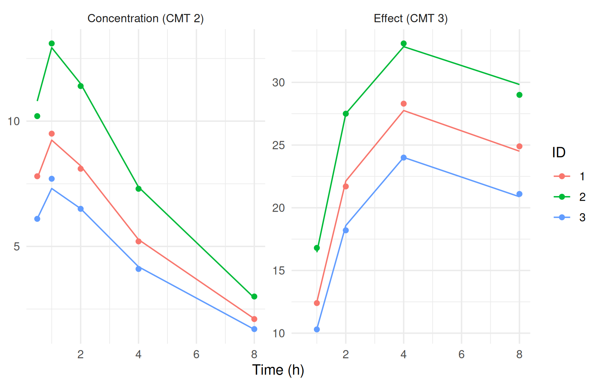
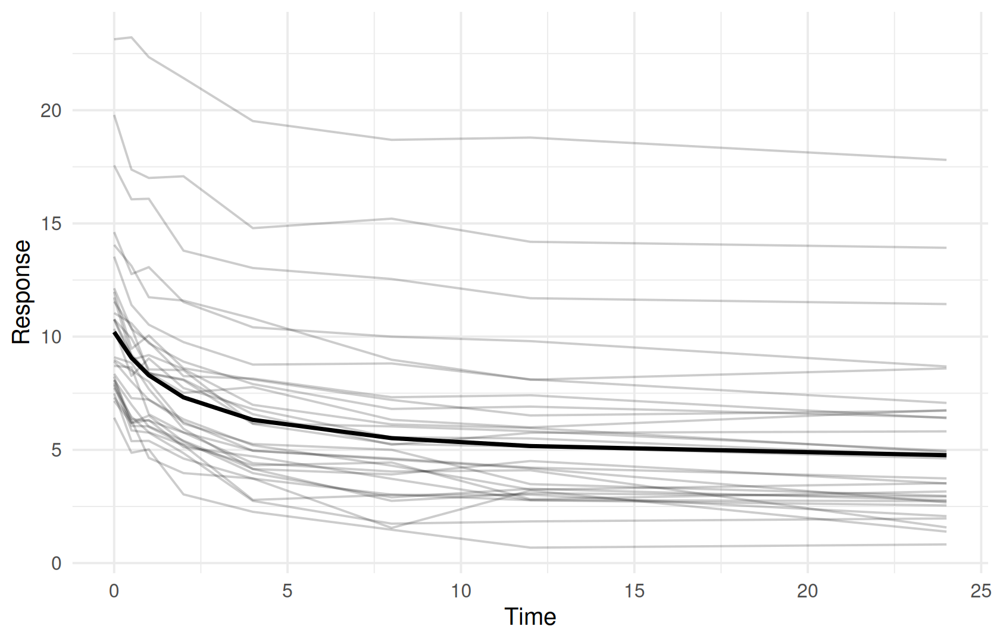

pkpd <- ferx_example("emax_pkpd")
pkpd_dir <- book_tempdir("pkpd")
pkpd_data <- read.csv(pkpd$data, na.strings = ".")
filter(pkpd_data, ID == 1) |> arrange(CMT, TIME)
#> ID TIME DV EVID AMT CMT RATE MDV
#> 1 1 0.0 NA 1 100 1 0 1
#> 2 1 0.5 7.8 0 NA 2 0 0
#> 3 1 1.0 9.5 0 NA 2 0 0
#> 4 1 2.0 8.1 0 NA 2 0 0
#> 5 1 4.0 5.2 0 NA 2 0 0
#> 6 1 8.0 2.1 0 NA 2 0 0
#> 7 1 1.0 12.4 0 NA 3 0 0
#> 8 1 2.0 21.7 0 NA 3 0 0
#> 9 1 4.0 28.3 0 NA 3 0 0
#> 10 1 8.0 24.9 0 NA 3 0 0
count(filter(pkpd_data, EVID == 0), CMT)
#> CMT n
#> 1 2 15
#> 2 3 12PK/PD and multiple endpoints
Where you are
So far every model had one endpoint, a drug concentration. Pharmacodynamic (PD) models describe a response. They can be linked to the pharmacokinetics and fitted together with the concentrations, used to compute a predicted effect from a PK fit, or stand on their own as an equation of time or dose. This chapter covers all three with the bundled examples.
WarningMaturity: stable, beta and experimental parts
The error models are stable in ferx-core. ODE models, [scaling] and [derived] are beta. Compartment-free models are documented in the ferx-core structural model page. See feature maturity.
The data
emax_pkpd has 3 subjects with an oral dose, plasma concentrations and effect measurements in one dataset. The CMT column tells the endpoints apart: 2 for the concentration, 3 for the effect:
Minimal runnable call: a joint PK/PD fit
The model has three ODE states: the depot, the central compartment and an effect compartment that follows the plasma concentration with rate KE0. [scaling] gives one readout per observed CMT (Observation scaling with [scaling]), and [error_model] one residual error model per CMT:
invisible(ferx_model_get_section(pkpd$model, "odes"))
#> # [odes]
#> d/dt(depot) = -KA * depot
#> d/dt(central) = KA * depot - CL/V * central
#> d/dt(effect) = KE0 * (central/V - effect)
invisible(ferx_model_get_section(pkpd$model, "scaling"))
#> # [scaling]
#> y[CMT=2] = central / V # plasma conc (mg/L)
#> y[CMT=3] = E0 + EMAX * effect^GAMMA / (EC50^GAMMA + effect^GAMMA) # Emax PD
invisible(ferx_model_get_section(pkpd$model, "error_model"))
#> # [error_model]
#> CMT=2: DV ~ proportional(PROP_ERR_PK) # central compartment (PK)
#> CMT=3: DV ~ additive(ADD_ERR_PD) # effect compartment (PD)
fit_pkpd <- ferx_fit(pkpd$model, pkpd$data, verbose = FALSE)Both endpoints enter one likelihood, so the PK and PD parameters are estimated together.
Reading the result
sdtab keeps the CMT column, so each endpoint can be plotted separately:

The predictions follow the data, but three subjects cannot determine eight structural parameters and two residual errors:
fit_pkpd$estimates[, c("estimate", "rse_pct")]
#> estimate rse_pct
#> TVCL 1.9732464647 2.170667
#> TVV 8.6426663276 2.259878
#> TVKA 2.3704024464 4.062792
#> TVKE0 0.2515138575 3.037510
#> TVE0 3.9603411889 55.674628
#> TVEMAX 42.9751711051 19.151999
#> TVEC50 3.8969463464 15.258605
#> TVGAMMA 1.4985026887 19.690190
#> ETA_CL 0.0012050321 102.814704
#> ETA_V 0.0008856919 98.185238
#> PROP_ERR_PK 0.0274070840 30.057275
#> ADD_ERR_PD 0.3874864042 24.786048
ferx_get_warnings(fit_pkpd, as_df = TRUE)[, c("severity", "category")]
#> severity category
#> 1 warning inflated_rse
#> 2 warning high_correlation
#> 3 critical condition_numberThe PD parameters have relative standard errors in the thousands of percent, and the parameters are almost perfectly correlated. The model structure is fine; the data are too few (see the simulation–estimation variant below).
Options that matter
| Where | Syntax | Meaning |
|---|---|---|
| Data |
CMT on observation rows |
Which endpoint the row is |
[structural_model] |
ode(states=[depot, central, effect]) |
No single obs_cmt; [scaling] defines each readout |
[scaling] |
y[CMT=2] = central / V, y[CMT=3] = <expr>
|
One readout per observed CMT
|
[error_model] |
CMT=2: DV ~ proportional(...), CMT=3: DV ~ additive(...)
|
One residual error model per CMT (ODE models only) |
[structural_model] |
y = <expr> with no pk or ode line |
A compartment-free model |
[derived] |
EFF = EMAX * IPRED / (EC50 + IPRED) |
An effect computed from a PK fit |
Every observed CMT needs a readout and an error model. The two forms cannot be mixed in one block (error model).
Variants
Simulation and estimation with more subjects
To see whether the joint model can be estimated with a realistic design, simulate a study from the model’s initial values and fit it again. The design has 30 subjects, six concentration samples and six effect samples each. ferx_simulate() without fit uses the model file’s parameters (Simulating scenarios):
ids <- 1:30
design <- bind_rows(
data.frame(ID = ids, TIME = 0, DV = NA, EVID = 1, AMT = 100, CMT = 1, RATE = 0, MDV = 1),
expand.grid(ID = ids, TIME = c(0.5, 1, 2, 4, 8, 12)) |>
mutate(DV = NA, EVID = 0, AMT = NA, CMT = 2, RATE = 0, MDV = 0),
expand.grid(ID = ids, TIME = c(1, 2, 4, 8, 12, 24)) |>
mutate(DV = NA, EVID = 0, AMT = NA, CMT = 3, RATE = 0, MDV = 0)
) |> arrange(ID, TIME, desc(EVID), CMT)
design_file <- file.path(pkpd_dir, "pkpd_design.csv")
write.csv(design, design_file, row.names = FALSE, na = ".")
simulated <- ferx_simulate(pkpd$model, design_file, n_sim = 1, seed = 42)
#> Warning: ferx_simulate produced 1 diagnostic:
#> W_DESIGN_DV: 360 observation row(s) (EVID=0) had a missing DV (`.`/`NA`/blank) and were kept as design points to simulate at. A fit of the same dataset would skip these rows (W_MISSING_DV), so the simulated dataset has more rows than the fitted one. Set MDV=1 on rows that are not sampling times.The warning is expected for a design. The simulated values replace the empty DV column, matched by subject, time and CMT:
observations <- design$EVID == 0
design$DV[observations] <- simulated$DV_SIM[match(paste(design$ID, design$TIME, design$CMT)[observations],
paste(simulated$ID, simulated$TIME, simulated$CMT))]
simulated_file <- file.path(pkpd_dir, "pkpd_simulated.csv")
write.csv(design, simulated_file, row.names = FALSE, na = ".")
fit_simulated <- ferx_fit(pkpd$model, simulated_file, verbose = FALSE)
data.frame(parameter = c(names(fit_simulated$theta), fit_simulated$eta_names, fit_simulated$sigma_names),
simulated_with = c(fit_simulated$theta_init, fit_simulated$omega_init[c(1, 4)], fit_simulated$sigma_init),
estimate = c(fit_simulated$theta, diag(fit_simulated$omega), fit_simulated$sigma),
rse_pct = fit_simulated$estimates$rse_pct)
#> parameter simulated_with estimate rse_pct
#> 1 TVCL 5.00 5.17343599 6.001648
#> 2 TVV 50.00 46.37184848 5.730231
#> 3 TVKA 1.00 0.92644614 3.630840
#> 4 TVKE0 0.30 0.28826008 5.360423
#> 5 TVE0 2.00 1.99112637 13.112052
#> 6 TVEMAX 40.00 38.01602363 19.908078
#> 7 TVEC50 5.00 5.24771500 30.942874
#> 8 TVGAMMA 1.00 0.91037217 6.167395
#> 9 ETA_CL 0.09 0.10262928 25.020200
#> 10 ETA_V 0.09 0.08518941 26.593750
#> 11 PROP_ERR_PK 0.10 0.10205285 6.353595
#> 12 ADD_ERR_PD 1.00 0.98064460 5.502101With 30 subjects all parameters are recovered with moderate standard errors. The simulated_with column is the model file’s initial values, which the simulation used and the fit started from.
Effects computed from a PK fit
When the PD parameters are known, an effect can be computed from the PK predictions without PD data. warfarin_derived_pkpd fixes EMAX, EC50 and a minimum effective concentration MEC as thetas and uses them in [derived]:
derived_pkpd <- ferx_example("warfarin_derived_pkpd")
invisible(ferx_model_get_section(derived_pkpd$model, "derived"))
#> # [derived]
#> KE = CL / V
#> T_HALF = 0.6931472 / KE
#>
#> # Emax PD effect at current concentration
#> EFF = EMAX * IPRED / (EC50 + IPRED)
#>
#> # TAD-gated Cmax: peak within the current dosing interval
#> CMAX_INTERVAL = max(IPRED, TAD < 24)
#>
#> # Time above MEC per dosing interval (hours)
#> TAM_TAU = integral(1.0, IPRED > MEC, window=24, anchor=0, step=0.1)
#>
#> # Time above MEC on day 1 specifically
#> TAM_D1 = integral(1.0, IPRED > MEC, from=0, to=24, step=0.1)
fit_derived <- ferx_fit(derived_pkpd$model, derived_pkpd$data, verbose = FALSE)
#> Warning in .ferx_compute_cor_matrix(result$cov_matrix): One or more diagonal
#> elements are non-positive; correlation matrix may not be meaningful.
filter(fit_derived$sdtab, ID == 1) |> select(TIME, IPRED, EFF, CMAX_INTERVAL, TAM_D1)
#> TIME IPRED EFF CMAX_INTERVAL TAM_D1
#> 1 0.5 5.351751 51.26351 11.38329 24
#> 2 1.0 8.283413 58.72984 11.38329 24
#> 3 2.0 10.708454 62.49256 11.38329 24
#> 4 4.0 11.383285 63.31396 11.38329 24
#> 5 8.0 10.757785 62.55533 11.38329 24
#> 6 12.0 10.069303 61.63636 11.38329 24
#> 7 24.0 8.254797 58.67576 11.38329 24
#> 8 48.0 5.547784 51.92255 11.38329 24
#> 9 72.0 3.728488 44.33077 11.38329 24
#> 10 96.0 2.505797 36.40958 11.38329 24
#> 11 120.0 1.684066 28.76246 11.38329 24The fixed thetas are used only in [derived], so the fit warns that they do not affect the predictions. That is intended here. With MEC = 0.5 every concentration in these data is above the MEC, so the time above it is the whole day. A copy with MEC = 8 shows a threshold within the concentration range, per 24-hour window:
mec8_model <- file.path(pkpd_dir, "warfarin_derived_pkpd_mec8.ferx")
writeLines(sub("theta MEC(0.5)", "theta MEC(8.0)", readLines(derived_pkpd$model), fixed = TRUE), mec8_model)
fit_mec8 <- ferx_fit(mec8_model, derived_pkpd$data, verbose = FALSE)
#> Warning in .ferx_compute_cor_matrix(result$cov_matrix): One or more diagonal
#> elements are non-positive; correlation matrix may not be meaningful.
filter(fit_mec8$sdtab, ID == 1) |> select(TIME, IPRED, TAM_TAU, TAM_D1)
#> TIME IPRED TAM_TAU TAM_D1
#> 1 0.5 5.351751 23.2 23.2
#> 2 1.0 8.283413 23.2 23.2
#> 3 2.0 10.708454 23.2 23.2
#> 4 4.0 11.383285 23.2 23.2
#> 5 8.0 10.757785 23.2 23.2
#> 6 12.0 10.069303 23.2 23.2
#> 7 24.0 8.254797 12.0 23.2
#> 8 48.0 5.547784 NaN 23.2
#> 9 72.0 3.728488 NaN 23.2
#> 10 96.0 2.505797 NaN 23.2
#> 11 120.0 1.684066 NaN 23.2Subject 1 is above 8 for most of the first day and about half of the second. From day 3 on its concentration stays below 8, and the time above the MEC in those windows is reported as NaN, not 0. Treat NaN as “never above” when you summarise it.
Models without compartments
A response that is a plain equation of time, dose or other data needs no compartments. emax_timecourse writes the prediction directly in [structural_model]: EFF is an intermediate and y is the prediction. The dataset has no doses:
timecourse <- ferx_example("emax_timecourse")
invisible(ferx_model_get_section(timecourse$model, "structural_model"))
#> # [structural_model]
#> # No `pk ...` and no `ode(...)` line: this block declares the prediction
#> # directly. `EFF` is a named intermediate; `y` is the prediction.
#> EFF = EMAX * TIME / (ET50 + TIME)
#> y = E0 - EFF
head(read.csv(timecourse$data, na.strings = "."), 3)
#> ID TIME DV MDV
#> 1 1 0.0 19.7922 0
#> 2 1 0.5 17.3779 0
#> 3 1 1.0 17.0081 0
fit_timecourse <- ferx_fit(timecourse$model, timecourse$data, verbose = FALSE)
fit_timecourse$estimates[, c("estimate", "rse_pct")]
#> estimate rse_pct
#> TVE0 10.20386741 5.609318
#> TVEMAX 5.91764644 1.708437
#> TVET50 2.09943732 6.894366
#> ETA_E0 0.09235685 25.923744
#> ADD 0.48045191 4.878111Such a model works with prediction, simulation and the diagnostics like any other. TAD and TAFD are NaN in sdtab, since there are no doses. For the same reason ferx_predict() passes on the data reader’s W_NO_DOSES warning, which for a compartment-free model states the design rather than a problem:
head(fit_timecourse$sdtab, 3)
#> ID TIME DV PRED IPRED CWRES IWRES EBE_OFV N_OBS TAFD
#> 1 1 0.0 19.7922 10.203867 19.28424 1.77662386 1.0572623 9.328104 8 NaN
#> 2 1 0.5 17.3779 9.065612 18.14598 -0.87930217 -1.5986637 9.328104 8 NaN
#> 3 1 1.0 17.0081 8.294603 17.37497 -0.04423527 -0.7635968 9.328104 8 NaN
#> TAD
#> 1 NaN
#> 2 NaN
#> 3 NaN
ggplot(fit_timecourse$sdtab, aes(TIME)) +
geom_line(aes(y = DV, group = ID), alpha = 0.2) +
geom_line(data = ferx_predict(timecourse$model, timecourse$data, fit = fit_timecourse) |> distinct(TIME, PRED),
aes(y = PRED), linewidth = 1) +
labs(x = "Time", y = "Response")
#> Warning: ferx_predict produced 1 diagnostic:
#> W_NO_DOSES: parsed zero dose events across all 30 subject(s) although scored observations are present. If this is a PK model, check that the dataset has an AMT column with EVID=1/4 dose rows (or a nonzero AMT when EVID is absent).
A compartment-free model cannot have [odes], [scaling] or references to central and depot. y[CMT=N] gives it several endpoints (structural model).
Pitfalls
- Joint PK/PD models need data for every parameter. Check relative standard errors and correlations before interpreting PD parameters; a simulation–estimation run tells whether a design can support the model.
-
Per-CMT error models need an ODE model. An analytical
pkmodel withCMT=N:lines is rejected. Useode_templateto write the PK part as ODEs. -
Every observed
CMTneeds a readout and an error model. A missing entry stops the fit and names the compartment. -
Thresholds that are never crossed give
NaNin[derived]filters and conditional integrals.
Warnings you may see here
-
general(warning): parameters declared but not used by the predictions, such as the fixed PD thetas ofwarfarin_derived_pkpdthat only[derived]reads.
Other warnings above (inflated_rse, high_correlation, condition_number, covariance_regularized) are covered in Parameter uncertainty.
Summary
- Put all endpoints in one dataset and tell them apart with
CMT. - Write the PK and PD states as ODEs, one
[scaling]readout and one error model perCMT, and fit them jointly. - Check with simulation and estimation whether a design can support the PD parameters.
- Compute effects from a PK fit with
[derived]when the PD parameters are known. - Write responses that are plain equations as compartment-free models.
Next: Binary endpoints covers binary endpoints.
TipReference
- R help:
?ferx_fit,?ferx_simulate,?ferx_predict - ferx-core: error model (multiple endpoints), scaling, structural model,
[derived]